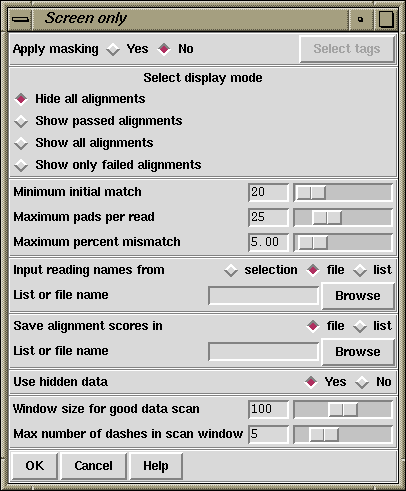

This function is used to compare a batch of readings against the data in an assembly database without entering them. It performs "normal shotgun assembly" and records the percentage mismatch for each matching reading in a file. If required, this file could then be sorted on percentage mismatch and used as a file of file names for "normal shotgun assembly"; in which case the best matches would be entered first. The readings in the batch are only compared to the current contents of the assembly database, and are not compared against the other readings in the batch.

As explained in normal assembly (see section Normal Shotgun Assembly) the user can select to "Apply masking", and if so, the "Select tags" button will be activated and if it is clicked will bring up a dialogue to allow tag types to be selected. See section Tag Selector.
The "display mode" dialogue allows the type of output produced to be set. "Hide all alignments" means that only the briefest amount of output will be produced. "Show passed alignments" means that only alignments that fall inside the entry criteria will be displayed. "Show all alignments" means that all alignments, including those that fail the entry criteria, are displayed. "Show only failed alignments" displays alignments only for the readings that fail the entry criteria.
When comparing each reading the program looks first for a "Minimum initial match", and for each such matching region found it will produce an alignment. If the "Maximum pads per read" and the "Maximum percent mismatch" are not exceeded the reading will be entered. The maximum pads can be inserted in both the reading and the consensus. If users agree we would prefer to swap the maximum pads criteria for a minimum overlap. i.e. only overlaps of some minimum length would be accepted.
Screening usually works on sets of reading names and they can be read from either a "file" or a "list" and an appropriate browser is available to enable users to choose the name of the file or list. If just a single reading is to be assembled choose "single" and enter the filename instead of the file or list of filenames.
The routine writes the names of all the readings and their alignment scores expressed as percentage mismatches to a "file" or a "list" and an appropriate browser is available to enable users to choose the name of the file or list.
Previous versions of the package also had the ability to search for matches in the "hidden" poor quality data at the ends of contigs. This feature is no longer available.
Note that this option may require the parameter maxseq to be set beforehand (see section Set Maxseq). This parameter defines the maximum length of consensus that can be created.